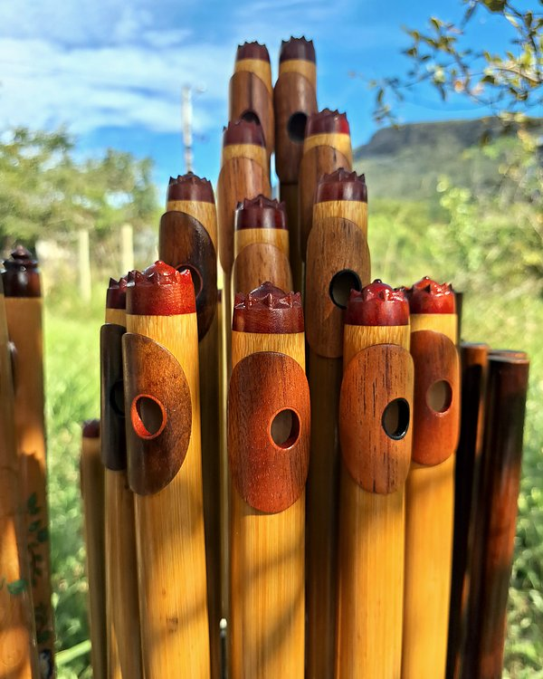
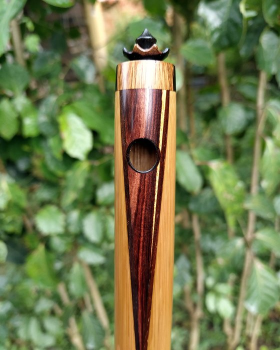
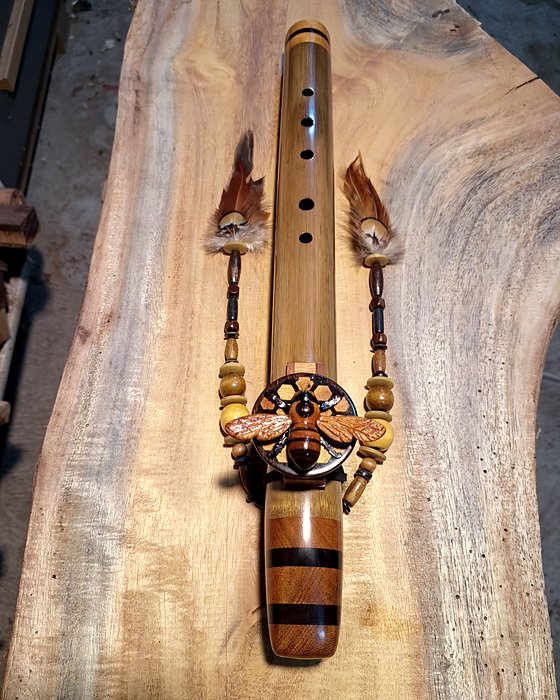
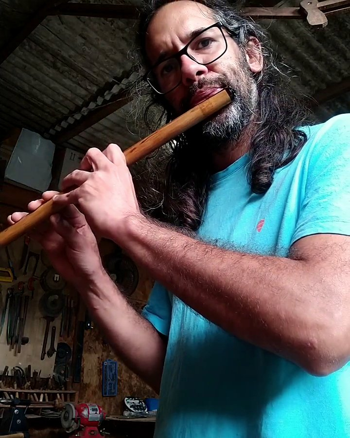
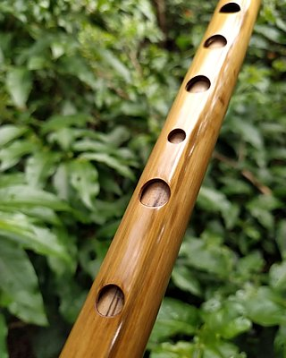
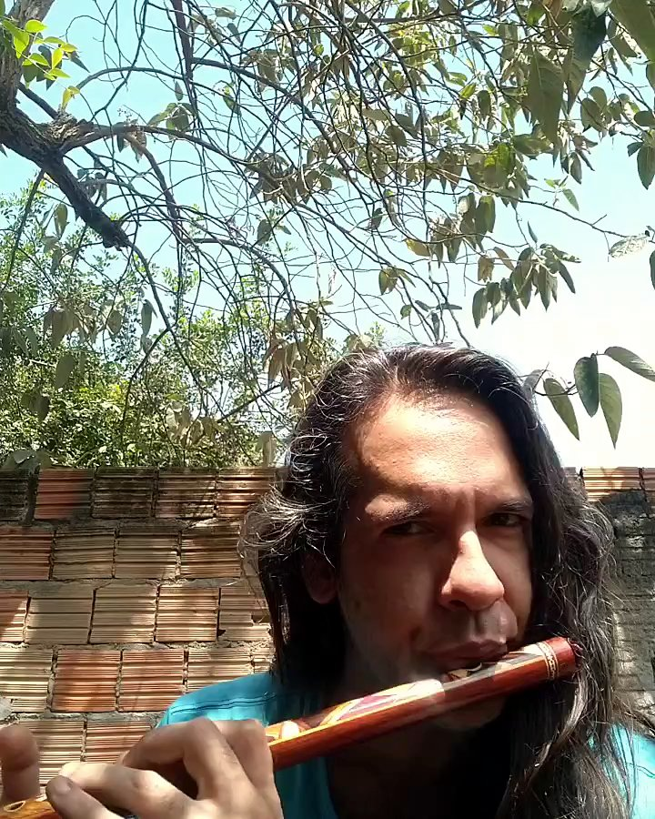
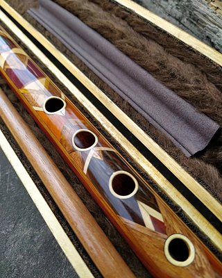
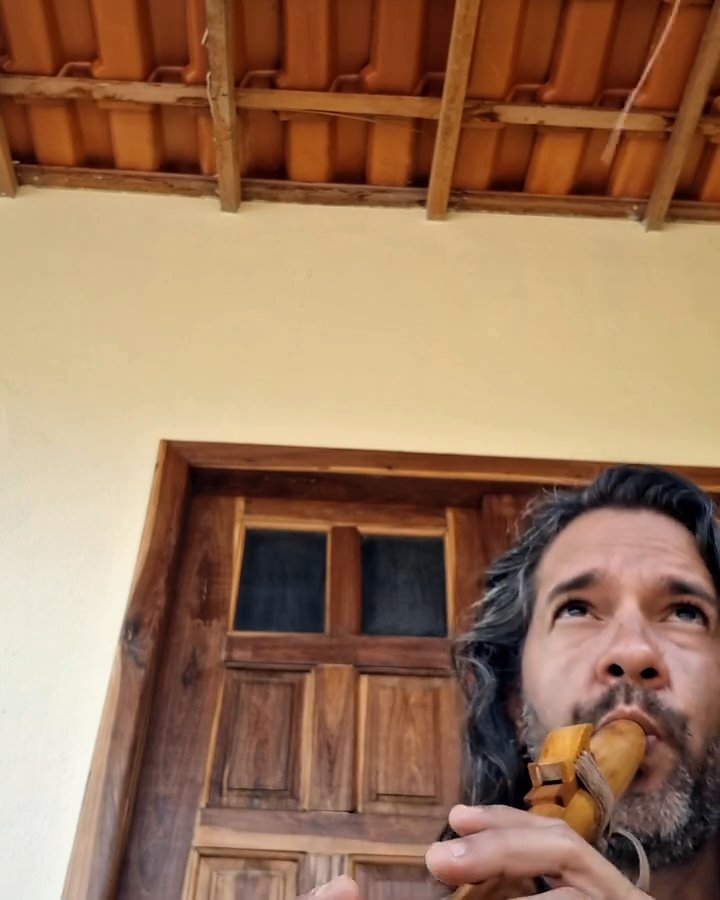
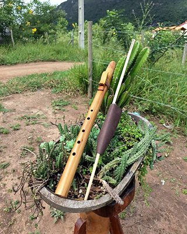
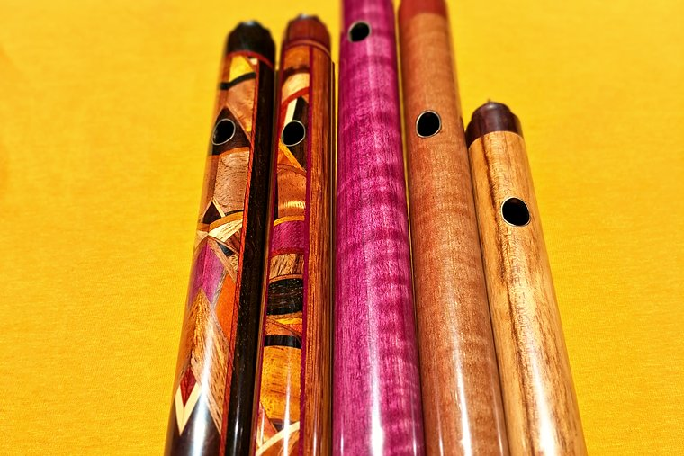

Flautas feitas à mão no Vale do Capão
Pífanos de bambu e de madeira, flautas irlandesas e flautas nativas. Escolho cada madeira e cada bambu, toco e afino furo a furo antes de a flauta sair do ateliê.
“Também sou pifeiro, então faço o instrumento pensando em quem vai tocar.”
Igor Bastos

As flautas
Tudo por encomenda, no tom, na madeira e com os detalhes que você escolher.

Pífanos
A flauta transversal de seis furos da tradição nordestina, em bambu ou madeira: corpo único, marchetado ou segmentado, em qualquer tom.
a partir de R$ 260Ver pífanos →Flauta irlandesa
Low D de sistema simples, o desenho anterior à flauta Boehm: cabeça cilíndrica, corpo cônico, seis furos e nenhuma chave. Em 2 ou 4 partes.
a partir de R$ 2.100Ver flauta irlandesa →
Flautas nativas
A flauta de bloco: o som sai ao primeiro sopro. Simples ou dupla, em bambu ou madeira, com totem esculpido.
a partir de R$ 380Ver flautas nativas →Ouça
Gravações minhas com flautas que saíram do ateliê. Ao lado de cada vídeo, a foto da mesma flauta.


Pífano de bambuPífano de bambu em Sol, com marchetaria em jacarandá-da-bahia e jacarandá mimoso

Pífano de madeiraPífano de muirapiranga (conduru) com marchetaria, em Sol
 Flauta irlandesaIrlandesa de jacarandá em Ré grave
Flauta irlandesaIrlandesa de jacarandá em Ré grave

Flauta nativaFlauta nativa de bambu em Sol, bocal e totem de cerejeiraO som se resolve por dentro
O que mais pesa no som é o formato de dentro do tubo e o acabamento interno bem feito. Por isso o trabalho que ninguém vê é o que leva mais tempo.
A madeira certa
Seleciono cada peça no comprimento certo e sem rachadura. No bambu, é a vara que me diz em que tom ela vai virar flauta.
Cabeça cônica
Nos pífanos de madeira, o tubo afunila por dentro em direção ao bocal, com alargadores que eu mesmo fabrico, um para cada tom.
Polida por dentro
Selo e dou polimento no tubo por dentro. Parede áspera tira o brilho do som.
Afinação furo a furo
Não basta a primeira oitava bater: ajusto cada furo para a 2ª e a 3ª oitava saírem afinadas.
Jacarandá, roxinho, muirapiranga…
Trabalho com madeiras brasileiras densas e estáveis, escolhidas peça por peça: jacarandá, maçaranduba, jaqueira, roxinho, araribá e muirapiranga. Origem, densidade e características de cada uma estão em Madeiras. No bambu, uso a espécie Bambusa tuldoides.


Quem recebeu
Recebi aqui... Sonzão, viu? Pífano maravilhoso.
Tati
Recebi hoje, tava tudo perfeito, até a embalagem.
Osorio
A flauta é muito bonita e o som não fica atrás!
Erivan
Como encomendar
Nada é pronta entrega: cada flauta é feita para quem encomendou. Você acompanha a confecção por fotos e vídeos.
- 1 · ConversaModelo, tom e madeira
Pelo WhatsApp ou pelo Direct. Me diga o que procura e o CEP, para o frete entrar no total.
- 2 · OrçamentoUm valor só
Flauta, opcionais, estojo e frete somados. O Monte sua flauta já mostra a conta.
- 3 · Sinal50% para começar
Por Pix. O restante quando a flauta fica pronta, antes do envio.
- 4 · Confecção e envioPrazo a partir do sinal
Madeira em 1 ou 2 partes: 2 meses; em 3 ou 4 partes: 3 meses. Bambu: cerca de 1 mês. Postado em Palmeiras (BA).